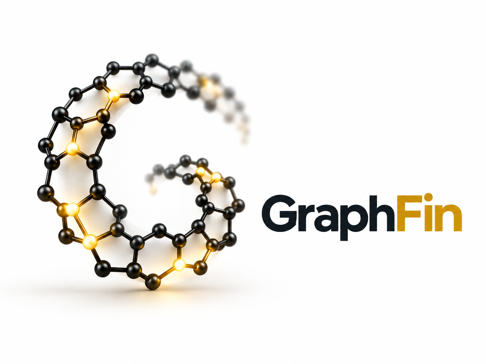

THE TIME-SERIES GRAPH DATABASE
Relationships
and observations,
together.
A graph database with native time-series data, built for connected financial intelligence.
Open source on GitHub
Context meets history.
Relationships tell you where to look. Observations tell you what changed. GraphFin brings both into one data model, with native time-series fields on vertices and edges.
Explore the data modelConnected financial intelligence.
Companies, funds, securities, and suppliers. Prices, holdings, and exposures over time. Investment analytics is the first use case for a general-purpose database.
Read the financial exampleOne graph. One transaction boundary.
Graph records and series buckets share a transactional store. GraphFin is currently in alpha; recovery, isolation, and replication evidence is documented with its qualification boundaries.
Review the qualification plan